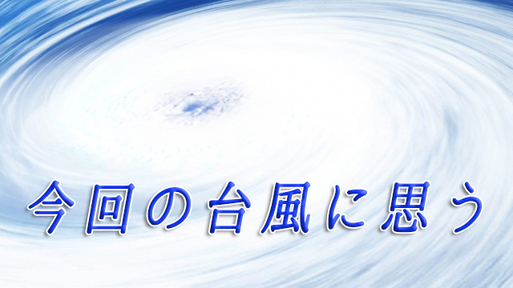

先週末に日本列島を直撃した台風は衝撃的だった。我が家でも「今までに経験したことのない規模の大雨と突風」というニュースを聞いて、窓ガラスにテープを張り息をひそめるように家族で肩寄せ合って猛威が過ぎ去るのを待った。
それでも台風が通過する瞬間はやはり家が揺れるほどの風と激しい雨が窓を叩き続け恐かった。
果たして被害は甚大で各地で家を失い少なからぬ尊い人命が奪われた。これを書いている時点（10月16日）で74人もの方が犠牲になっているという。日を追うごとに被害の大きさが判明してくると思うが、被災された方々の今後を考えると1日も早い復興を祈りたい。
それにしてもこのような巨大な自然の猛威に襲われると私たちは無力感を感じざるを得ない。いくら文明が発達し科学技術が進歩したといっても、それによって私たちの生命が絶対安全だという保証はないという事実。私たち人間の力には限界があるという事実を思い知らされるからだ。
日頃私たちは平穏無事が当たり前だと思っている。命が脅かされるような事態に陥るはずがないと思って生きている。明日も今日と同じような日々が続くと信じて暮らしている。しかしその明日が来ないとしたら…。
歴史をひも解けば人類は定期的に襲って来る自然災害や疫病、戦争による大量死を何千年も経験したきた。特に自然の災害―洪水や河川の氾濫干ばつ、地震や台風―に人々は悩まされてきた。むしろ自然災害からどう守るかその苦心から科学や技術そして学問が生まれ文明が起こったといえる。
だが今や私たちは自らつくり出した文明そのものに安住してしまい、自然の脅威を身近に感じる能力（センサー）を失いつつある。
「だからこそ日頃からの備えが大事なのだ」と多くの人が現実的対処を語るが、実は現代人が失いつつあるのは脅威に対するリスク感覚だけではない。
人間も実は自然の一部であること。
他の動植物も含め人間も自然界の一部として生かされているのだから、自然（全体）と共に生き全体を生かしていくこと。つまり共感力が必要なのに私たちはそのことを忘れているのではないか。
昔の人はその共感力をもっていたと思う。確かに自然は時として猛威をふるう。神仏に祈るだけでなく技術によって克服することで文明を発展させたのは先にも言った通りだが、一方において自然の恵みによって人間が生かされていることも昔の人は知っていた。
太陽の恵みがあり動物も植物も人間も繁栄できる。大気の循環は風となって種を運ぶ。海は豊かな生命の宝庫で私たちの起源である。川は土地を潤し雨は作物を育てる。この自然の循環の中に私たちも現れている。
それなのにいつしか私たちは「自然」をコントロールし征服できると信じてしまった。この人間優位の考えが現在起こっている様々な環境破壊や自然循環のバランスを崩す大もとになっていると感じてしまう。
確かに災害に備えることは必要だし考え得るあらゆる合理的な手立てを講じることは大切だと思う。だがその場合でも自然現象を対立物としてつまり厄介で避けるべきものとして考える限り、それは征服すべき対象としてどこまでも脅威であり続ける。
「台風とか地震とか脅威に決まってるだろ」そう思うかも知れないが台風や地震に悪気はない。それらはあくまで自然現象なのだ。それはどうして起こるかいつ起こるかは不可知の部分が大きい。
何が言いたいのかといえば、人間には災いとしか思えない自然の猛威も故あって起こる現象ではないかということ。
たとえば人は時々カゼをひいたり熱を出すことがある。かつて整体のある有名な先生が「人間は年に1度くらいはカゼをひく必要がある。それによって体調がリセットされるからだ」と言ったが、台風や地震もそれと同じく地球という生命体維持のためのリセット現象なのかも知れない。
あるいは溜まり切ったエネルギーを放出することで全体を正常に保とうとするデトックスなのかも知れない。
いずれにせよ自然現象には私たちの知り得ない未知のシステム、人智の及ばない不可知の領域があり私たちはそれに対してもっと謙虚にならなければならないのではないかと言いたいのだ。
自然災害という言葉が示すように私たちは自然現象を自分たちの都合に応じて「良い・悪い」と判定するが、人間の都合のために地球を含めた自然全体が存在しているわけではないことを深く見つめ直すときに来ているのではないかと思う。
今回の台風で私は改めて自然といかに向き合うか、その恐ろしさだけでなく広大な人智を超えた領域といかに折り合って生きていくべきかを考えさせられた。